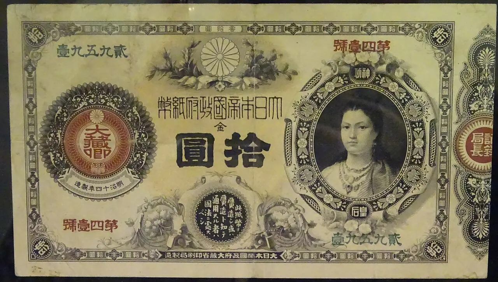

원달러 환율이 오르면 수출주가 좋아진다는 말은 절반만 맞습니다. 매출을 달러로 받는 기업은 원화 환산 매출이 늘어날 수 있지만, 원재료와 운임, 장비, 이자 비용을 달러로 내는 기업은 비용도 같이 커집니다. 투자자는 환율 방향보다 기업의 달러 노출 구조를 먼저 봐야 합니다.
같은 자동차와 전자 업종 안에서도 효과는 다릅니다. 해외 공장에서 생산해 현지에서 파는 기업은 환율 효과가 제한적일 수 있고, 국내에서 생산해 수출하는 기업은 원화 약세가 매출총이익률에 더 크게 반영될 수 있습니다. 반대로 달러 표시 부채가 많거나 원재료 수입 비중이 큰 기업은 환율 상승이 부담이 됩니다.
환율은 기업 실적뿐 아니라 외국인 투자자의 원화 자산 선호도도 흔듭니다. 환차손을 걱정하는 외국인은 좋은 실적을 가진 종목도 잠시 줄일 수 있습니다. 그래서 원달러 환율은 수출주 호재라는 단순한 문장보다 비용 구조와 수급 구조를 함께 보는 지표입니다.
매출 통화부터 나눕니다

달러 매출 비중이 높아도 원가가 어떤 통화로 발생하는지 봐야 합니다.
해외 생산과 해외 판매가 함께 있으면 환율 효과는 회계상 번역 효과에 가까워질 수 있습니다.
국내 생산 후 수출하는 기업은 환율 변화가 가격 경쟁력과 마진에 더 직접적으로 들어옵니다.
매출 통화부터 나눕니다을 볼 때는 숫자 하나를 따로 떼어 보지 않는 편이 좋습니다. 달러 매출 비중이 높아도 원가가 어떤 통화로 발생하는지 봐야 합니다. 해외 생산과 해외 판매가 함께 있으면 환율 효과는 회계상 번역 효과에 가까워질 수 있습니다. 국내 생산 후 수출하는 기업은 환율 변화가 가격 경쟁력과 마진에 더 직접적으로 들어옵니다. 이 흐름이 다음 분기에도 이어지는지 확인하면 뉴스의 크기와 실제 투자 가치 사이의 간격을 줄일 수 있습니다.
원가가 따라오면 호재가 줄어듭니다
관련 영상
원달러 환율과 수출기업 이익률을 읽는 방법
원유, 가스, 금속, 반도체 장비처럼 달러 결제 원가가 큰 산업은 환율 상승의 장점이 줄어듭니다.
운임과 보험료가 올라가는 국면에서는 환율 효과와 물류비 부담을 함께 봐야 합니다.
원가 전가력이 약한 기업은 매출 증가보다 이익률 하락이 먼저 나타날 수 있습니다.
원가가 따라오면 호재가 줄어듭니다을 볼 때는 숫자 하나를 따로 떼어 보지 않는 편이 좋습니다. 원유, 가스, 금속, 반도체 장비처럼 달러 결제 원가가 큰 산업은 환율 상승의 장점이 줄어듭니다. 운임과 보험료가 올라가는 국면에서는 환율 효과와 물류비 부담을 함께 봐야 합니다. 원가 전가력이 약한 기업은 매출 증가보다 이익률 하락이 먼저 나타날 수 있습니다. 이 흐름이 다음 분기에도 이어지는지 확인하면 뉴스의 크기와 실제 투자 가치 사이의 간격을 줄일 수 있습니다.
외국인 수급은 환헤지 비용을 봅니다
원화 약세가 빠르면 외국인은 실적 개선보다 환차손 위험을 먼저 계산할 수 있습니다.
선물환과 통화스와프 비용이 높아지면 원화 자산 투자 매력이 낮아집니다.
환율 안정은 외국인 순매수의 필요조건일 때가 많지만 충분조건은 아닙니다.
이 대목에서는 숫자 하나를 따로 떼어 보지 않는 편이 좋습니다. 원화 약세가 빠르면 외국인은 실적 개선보다 환차손 위험을 먼저 계산할 수 있습니다. 선물환과 통화스와프 비용이 높아지면 원화 자산 투자 매력이 낮아집니다. 환율 안정은 외국인 순매수의 필요조건일 때가 많지만 충분조건은 아닙니다. 이 흐름이 다음 분기에도 이어지는지 확인하면 뉴스의 크기와 실제 투자 가치 사이의 간격을 줄일 수 있습니다.
수출주 안에서도 순서가 갈립니다
자동차는 판매 지역과 인센티브, 반도체는 가격과 장비 결제 통화를 같이 확인해야 합니다.
조선과 방산은 수주 통화, 헤지 비율, 실제 인도 시점이 환율 효과를 나눕니다.
음식료와 소비재는 해외 매출보다 원재료 수입 비중이 더 중요할 수 있습니다.
수출주 안에서도 순서가 갈립니다을 볼 때는 숫자 하나를 따로 떼어 보지 않는 편이 좋습니다. 자동차는 판매 지역과 인센티브, 반도체는 가격과 장비 결제 통화를 같이 확인해야 합니다. 조선과 방산은 수주 통화, 헤지 비율, 실제 인도 시점이 환율 효과를 나눕니다. 음식료와 소비재는 해외 매출보다 원재료 수입 비중이 더 중요할 수 있습니다. 이 흐름이 다음 분기에도 이어지는지 확인하면 뉴스의 크기와 실제 투자 가치 사이의 간격을 줄일 수 있습니다.
환율 시나리오는 범위로 둡니다
정확한 환율 수준보다 기업이 감당 가능한 범위를 보는 편이 실전적입니다.
환율이 급등한 뒤 안정되는 구간에서는 실적보다 밸류에이션 회복이 먼저 나올 수 있습니다.
분기 실적 발표에서는 환율 효과와 물량 효과를 반드시 나눠 읽어야 합니다.
환율 시나리오는 범위로 둡니다을 볼 때는 숫자 하나를 따로 떼어 보지 않는 편이 좋습니다. 정확한 환율 수준보다 기업이 감당 가능한 범위를 보는 편이 실전적입니다. 환율이 급등한 뒤 안정되는 구간에서는 실적보다 밸류에이션 회복이 먼저 나올 수 있습니다. 분기 실적 발표에서는 환율 효과와 물량 효과를 반드시 나눠 읽어야 합니다. 이 흐름이 다음 분기에도 이어지는지 확인하면 뉴스의 크기와 실제 투자 가치 사이의 간격을 줄일 수 있습니다.
원달러 환율은 수출기업의 기회이면서 동시에 비용표입니다. 매출만 달러로 환산하는 기업과 비용까지 달러로 치르는 기업은 같은 환율에서도 다른 실적을 냅니다. 따라서 투자자는 수출 비중, 원가 통화, 헤지 정책, 해외 생산 비중을 함께 정리해야 합니다.
좋은 질문은 하나입니다. 환율이 지금보다 5% 더 움직였을 때 이 회사의 영업이익률은 올라가는지 내려가는지입니다. 이 질문에 답할 수 있어야 환율 뉴스가 종목 선택의 근거가 됩니다.
시장 지표는 하루 단위로 크게 흔들리지만 포트폴리오 결정은 더 느리게 내려야 합니다. 금리, 환율, 원자재, 신용스프레드가 같은 방향으로 움직이는지 확인하고, 한 지표만 튄 날에는 추격 매매보다 보유 비중과 환 노출을 점검하는 편이 실전적입니다.
특히 한국 투자자는 원화 기준 성과를 함께 봐야 합니다. 해외 자산이 올라도 환율이 반대로 움직이면 체감 수익이 줄 수 있고, 국내 주식이 싸 보여도 외국인 환헤지 비용이 높으면 수급 회복이 늦어질 수 있습니다.
마지막으로 운송·물류 글을 읽을 때는 가격이 먼저 움직인 뒤 이유가 붙는 경우가 많다는 점을 기억해야 합니다. 투자자는 결론을 서둘러 정하기보다 공식 자료, 최근 실적, 현금흐름, 밸류에이션, 시장 기대가 서로 같은 방향인지 차분히 확인하는 편이 좋습니다.
시장 지표는 하루 단위로 크게 흔들리지만 포트폴리오 결정은 더 느리게 내려야 합니다. 금리, 환율, 원자재, 신용스프레드가 같은 방향으로 움직이는지 확인하고, 한 지표만 튄 날에는 추격 매매보다 보유 비중과 환 노출을 점검하는 편이 실전적입니다.
특히 한국 투자자는 원화 기준 성과를 함께 봐야 합니다. 해외 자산이 올라도 환율이 반대로 움직이면 체감 수익이 줄 수 있고, 국내 주식이 싸 보여도 외국인 환헤지 비용이 높으면 수급 회복이 늦어질 수 있습니다.
마지막으로 투자 글을 읽을 때는 가격이 먼저 움직인 뒤 이유가 붙는 경우가 많다는 점을 기억해야 합니다. 투자자는 결론을 서둘러 정하기보다 공식 자료, 최근 실적, 현금흐름, 밸류에이션, 시장 기대가 서로 같은 방향인지 차분히 확인하는 편이 좋습니다.
이 글의 목적은 정답을 대신 내려 주는 것이 아니라 확인 순서를 줄이는 데 있습니다. 관심 종목이나 상품이 있다면 같은 기준을 표로 옮겨 적고, 다음 실적 발표 때 실제 숫자가 어떻게 변했는지 다시 비교해 보는 방식이 가장 안전합니다.
실전 점검에서는 지표의 방향보다 조합을 먼저 봐야 합니다. 금리만 오르는지, 달러와 원자재와 신용스프레드가 함께 움직이는지에 따라 포트폴리오 대응은 달라집니다. 한 지표가 튄 날에는 결론을 빨리 내리지 말고 다른 지표가 같은 이야기를 하는지 확인하는 편이 좋습니다.
또한 시장 변수 점검은 매매 신호가 아니라 위험 노출을 조정하는 자료로 쓰는 것이 안전합니다. 보유 종목의 업종, 통화, 금리 민감도, 원자재 비용 노출을 표로 적어 두면 뉴스가 나올 때 어떤 자산이 먼저 흔들릴지 더 빨리 알 수 있습니다.
마지막 확인은 시간입니다. 하루 변동은 감정의 영역에 가깝고, 몇 주 동안 이어지는 흐름은 자금 배분의 영역에 가깝습니다. 같은 방향의 변화가 반복될 때만 비중 조정의 근거로 삼는 편이 실수를 줄여 줍니다.
또 하나 중요한 점은 기록입니다. 관심 있는 종목이나 상품을 볼 때 오늘의 판단 근거를 짧게 남겨 두면 다음 실적 발표나 시장 변화가 왔을 때 생각이 어떻게 달라졌는지 확인할 수 있습니다. 이 기록은 매수와 매도보다 먼저 투자 습관을 안정시키며, 같은 실수를 반복하지 않게 도와줍니다.
작은 차이를 확인하는 습관이 쌓이면 같은 뉴스에서도 더 침착하게 판단할 수 있습니다.